I am a Bristol (UK) based designer and illustrator with front-end skills and a passion for CSS, working for Future Insights.

Experiments
-
 Sass + Susy
A collection of Codepen experiments using Sass and the Susy grid system for fast layouts. These experiments informed a talk and article on the subject.
-
 Susy + Flexbox
Exploring the possibilities of combining Susy and flexbox to create more flexible grids.
Articles
-
Smarter Grids with Sass and Susy
Published 20th July, 2015, Smashing Magazine
-
We Are Not That Important
Published 4 March, 2015, The Pastry Box
-
Roll a Six to Start
Published 19 July, 2014, The Pastry Box
-
Web Design Essentials: Style Guides and Pattern Libraries
Published 18 July, 2014, Future Insights
-
A Tale of Ice and Fire: Storytelling on the Web
Published 27 May, 2014, Future Insights